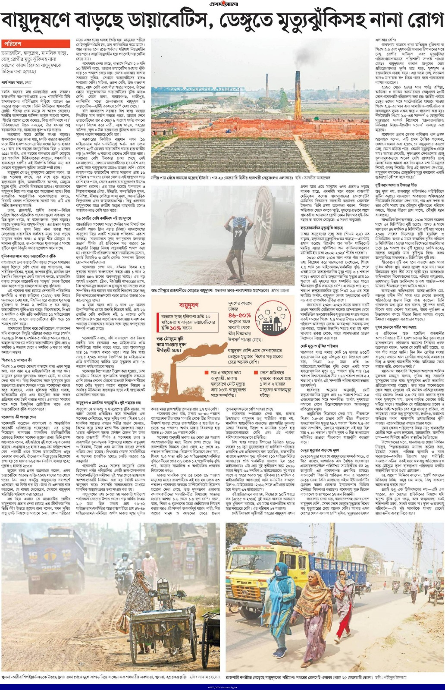

Social media and outreach, interviews, news coverage, and editorials on environmental health, causal methods, and policy-relevant evidence in Bangladesh and globally.
Social Media/Outreach
Media Interviews
Air pollution, diabetes, dengue mortality, and broader health risks

- English article — Air pollution raises dengue death risk, fuels diabetes, other chronic diseases
- Bengali article (বাংলা) — ডায়াবেটিসসহ নানা রোগ বাড়াচ্ছে বায়ুদূষণ, ঢাকাসহ কয়েক শহর ঝুঁকিতে
Media Coverage
Household air pollution and early child development
- English article — Household air pollution delays early child development in under-5 years children in Bangladesh
High blood pressure burden and trends in Bangladesh
- Bengali article (বাংলা) — পুরুষদের মধ্যে উচ্চ রক্তচাপের প্রবণতা বেড়েছে ৫৫ শতাংশ
Editorials/Op-Eds
Meeting clean air targets and the diabetes burden in Bangladesh
- English article — Meeting clean air targets could curb the diabetes burden in Bangladesh
Why do people not quit tobacco smoking?
- English article — Why do people not quit tobacco smoking?